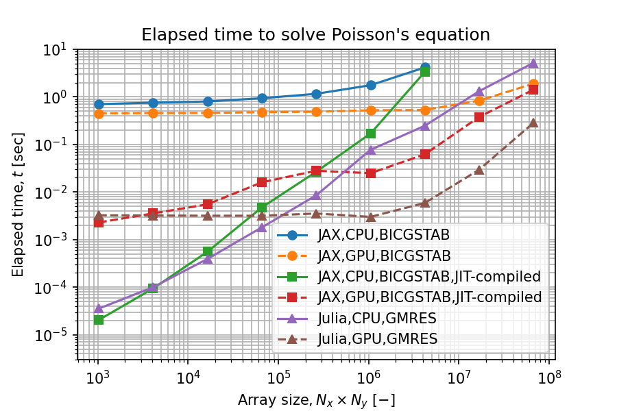

Python(JAX)とJuliaの比較
Contents
Python(JAX)とJuliaの比較¶
Pythonは読み書きしやすいプログラミング言語ですが、計算速度が遅いことが玉に瑕です。 これを克服する選択肢として、JAXとJuliaを比較しました。
なぜPython(JAX)とJulia？¶
候補は以下のものがありました。
MATLAB: 有償ソフトウェア。製品設計、制御設計のプラットフォーム
C++: GitHubで見かける最近の多くの技術計算オープンソースソフトウェアがC++で記述され、Pythonインターフェースで実行される
Rust: 実行速度が速く、デバッグしやすい。
Pythonライブラリの中で、JAXは、NumPy、SciPy、GPU計算、JITコンパイルから自動微分に至るまでをカバーしており、他のPythonライブラリの上位互換と言えそうです。 Juliaは、Pythonと同じくJupyter環境で逐次実行できるのが良いです。また、技術計算分野に限ってはPythonよりもライブラリが充実しているように思います。 MATLABは、JITコンパイル可能なようですが、ライセンスを購入しなければ使用できません。 C++、Fortranは、習熟やデバッグに時間がかかりそうなので避けました。さらなる高速が必要な時に、再度検討します。 Rustはコンパイルが必要とはいえデバッグしやすいらしいですが、技術計算ライブラリが充実しているようには見えませんでした。 そういうわけで、今回はJAXとJuliaを選択しました。
検証環境¶
Windows11のUbuntu 20.04 on WSL2で実行しました。Windows10 ver. 20H2以降は、WSLでGPUを利用できます。
CPUとGPUは、以下の表のものを用いました。
浮動小数点演算性能 (単位: TFLOPS) |
FP32 |
FP64 |
|---|---|---|
CPU: AMD Ryzen9 5950X |
0.97 |
|
GPU: NVIDIA GeForce RTX 3090 |
39.1 |
0.61 |
どちらも2020年秋発売のメインストリーム向けフラグシップなので、CPU計算とGPU計算の比較にはちょうど良いです。
インストール¶
JAX¶
公式のインストール手順にしたがってインストールしました。 WindowsでGPUバージョンのJAXを利用する場合、CUDA on WSLを利用します。
Attention
WSLではないWindows上で実行したい場合、ソースからビルドする必要があります。
pipパッケージに、CUDAとCuDNNがバンドルされていないので、別途インストールが必要です。
CUDAはここ、CuDNNは、ここに記載された通りの手順で導入しました。少し面倒です。
Caution
JAX、CUDA、CuDNNのバージョンを一致させなければ動作しません。
読み書きしやさ¶
Term 1 : Definition
Term 3
: Definition
Term 4
: Definition
Term 2 : Definition
JAX¶
JITコンパイルはデコレータ@jitで指示します。
インスタンス変数に配列を持つclass内methodのJITコンパイルにはやや面倒な対策が必要でした(公式FAQ)。
Pythonらしさはなくなりますが、classを使わずに書くのが簡単そうです。
また、jax.numpyではない通常のnumpyがあるとJITコンパイルに失敗するので、膨大なライブラリがあるというPythonの利点を活かせないこともありあそうです。試していませんが、SymPyで作成した関数をJITコンパイルできないとしたら技術計算用途では痛いです。
PythonのAPIドキュメントは、引数の説明から、実行例まで丁寧にまとめられたものが多く、とても役に立ちます。
Julia¶
classの概念がなく、function (Pythonでいうmethod) で記述します。 JITコンパイルはユーザーが明示的に指示する必要がなく、JAXのようにJITコンパイルだけの特殊な構文がないのは良かったです。
しかし、関数の引数に何を与えればよいかAPIドキュメントを読んでもわからず悩むことがよくありました。 docstringに引数の説明を記述しないのは風習なのでしょうか。
計算時間評価¶

- BKSE12
Jeff Bezanson, Stefan Karpinski, Viral B. Shah, and Alan Edelman. Julia: a fast dynamic language for technical computing. 2012. URL: https://arxiv.org/abs/1209.5145, doi:10.48550/ARXIV.1209.5145.